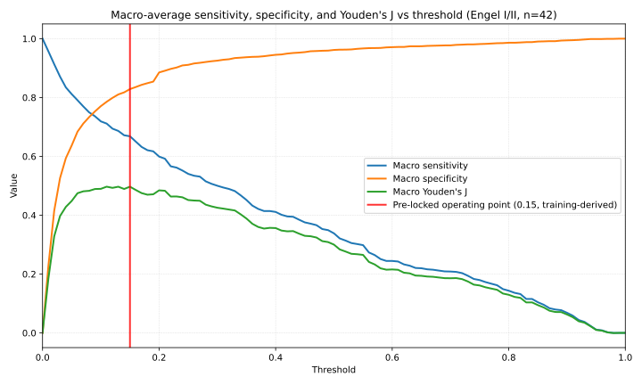
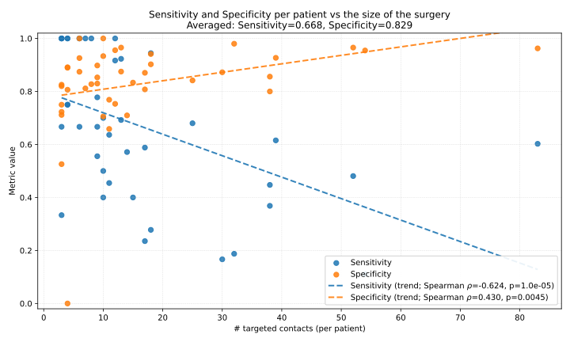
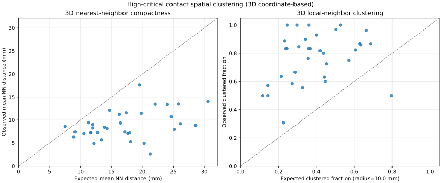
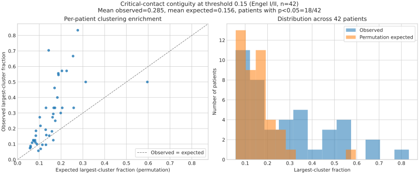
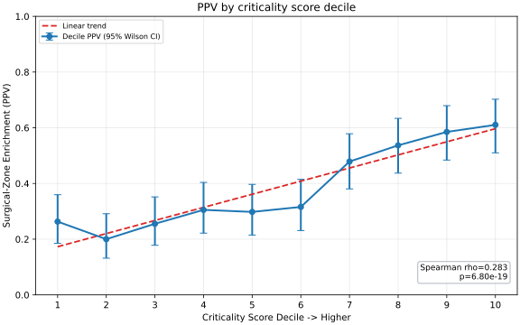
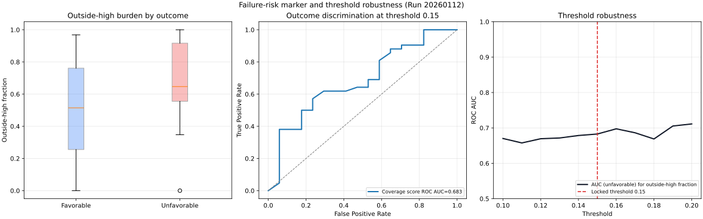
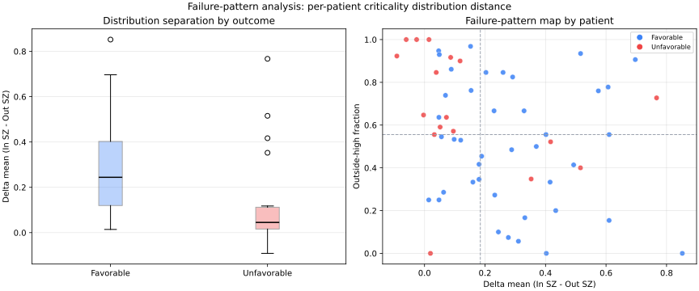

Clinical Validation of CN-Suite
Machine Learning-Based Directed Network Analysis
for Drug-Resistant Epilepsy Surgery
A Retrospective, Multicenter, Observational Study
across Four U.S. Level-4 Epilepsy Centers
The Clinical Challenge
Drug-resistant epilepsy (DRE) affects ~20 million people worldwide. Surgical intervention is the only curative option, but success rates range from only 30–70% depending on etiology and localization accuracy. Failures carry continued seizure burden, elevated SUDEP risk, and multi-million-dollar societal costs per patient.
How CN-Suite Works
CN-Suite is a Software as a Medical Device (SaMD) that computes quantitative "criticality scores" for each brain region sampled by intracranial electrodes. Instead of relying on visual pattern recognition, it quantifies directed information flow between neural signals to distinguish seizure "drivers" from passive "responders."
Signal Processing
Delay-adjusted wavelet transfer entropy (dWTE) — a nonlinear, information-theoretic measure that captures directional causality between neural signals across time-frequency scales. Produces a pairwise directed connectivity matrix for each seizure epoch.
Classification
XGBoost classifier — ensemble machine learning that maps connectivity features to a criticality score (0–1) per contact per seizure. Score near 1 = causal driver that exports information. Score near 0 = passive responder. Model weights were locked before validation.
Study Design
Retrospective, multicenter, observational, single-arm performance study. The algorithm was trained on an independent cohort (N=37) from 3 centers and hash-locked before validation on 60 patients from 4 different centers. Zero overlap between training and validation data.
| Role | Centers | N |
|---|---|---|
| Training | BCH, NIH, UMMC | 37 |
| Validation | HUP, JHH, UMF, TCH | 60 |
Inclusion Criteria
Age ≥ 3 years · Focal/multifocal DRE · Curative-intent resection or ablation · ≥ 3 stereotyped seizures captured during iEEG · ≥ 12-month follow-up with Engel classification · Detailed operative notes mapping the surgical zone
Primary Endpoint
Standardized effect size (Cohen's d) of the patient-level interpretability ratio between favorable (Engel I–II) and unfavorable (Engel III–IV) outcome groups. Success = lower 95% CI bound exceeds the pre-specified performance goal of 0.205.
Patient Demographics
Of 75 records screened, 60 met all eligibility criteria (5 excluded by criteria, 10 by incomplete data). All 60 were successfully processed — zero processing failures.
| Site | Favorable | Unfavorable | Total | % |
|---|---|---|---|---|
| HUP (Penn) | 34 | 13 | 47 | 78.3% |
| TCH (Texas Children's) | 7 | 2 | 9 | 15.0% |
| JHH (Johns Hopkins) | 0 | 3 | 3 | 5.0% |
| UMF (Miami) | 1 | 0 | 1 | 1.7% |
Effect-Size Analysis: Primary Endpoint Met
The interpretability ratio asks: does the algorithm assign higher criticality to tissue the surgeon actually treated? Favorable-outcome patients showed a mean ratio of 4.64 vs. 1.83 for unfavorable, confirming the algorithm reliably distinguishes driver tissue in successful surgeries.
| Subgroup | Fav. Mean | Unfav. Mean | Boot. d | 95% CI | p |
|---|---|---|---|---|---|
| All Subjects | 4.64 | 1.83 | 0.74 | 0.39, 1.06 | 0.003 |
| Adults | 5.05 | 2.00 | 0.73 | 0.37, 1.08 | 0.006 |
| Pediatrics | 2.58 | 0.54 | 1.87 | 1.17, 3.24 | < 0.0001 |
Sensitivity & Specificity Across Thresholds
This figure sweeps the criticality threshold from 0 to 1, showing how patient-level macro-averaged sensitivity, specificity, and Youden's J change. The pre-locked operating point at 0.15 (red marker) was derived from the independent training cohort by maximizing Youden's J over seizure-free patients.
Note that this threshold was not optimized on the validation set — it was fixed prior to any validation analysis. The validation-set optimum may differ, but using a training-derived threshold prevents overfitting and ensures generalizability.

Diagnostic Performance at the Contact Level
686 treated and 3,277 untreated contacts were evaluated in the Engel I/II cohort. Three estimation approaches address different aspects of the clustered data structure:
Sensitivity & Specificity
| Group | Sens (GEE) | Spec (GEE) |
|---|---|---|
| All (N=42) | 64.3% | 84.3% |
| Adults (n=35) | 59.6% | 86.4% |
| Pediatrics (n=7) | 91.1% | 76.0% |
PPV & NPV
| Group | PPV (GEE) | NPV (GEE) |
|---|---|---|
| All (N=42) | 49.0% | 88.0% |
| Adults (n=35) | 56.4% | 85.6% |
| Pediatrics (n=7) | 10.8% | 99.4% |
Performance Scales with Surgery Size
The strongest finding: per-patient sensitivity is inversely correlated with surgery size (ρ = −0.62, p < 0.0001). The algorithm is most informative for small focal procedures — the clinical scenario most relevant to minimally invasive ablation (LITT).


High-Critical Contacts Form Compact 3D Clusters
A critical question for surgical planning: are flagged contacts targetable focal subnetworks, or diffusely scattered? 3D coordinate-based clustering analysis (n=34 with available coordinates) shows they are significantly clustered — roughly half the inter-contact distance expected by chance.


Criticality Scores Carry Rank-Order Information
Beyond the binary threshold classification, do continuous scores carry clinically useful rank information? Yes — among the 946 high-critical contacts, the proportion falling inside the surgical zone increases monotonically with criticality score.

Why Surgery Fails: Untreated Driver Tissue
In patients whose surgery failed, the algorithm identified critical tissue outside the surgical zone — criticality scores were nearly as high outside as inside (Δmean = 0.05), whereas favorable patients showed clear separation (Δmean = 0.24, p = 0.002).


Limitations
Retrospective design — validates correlation with outcomes but cannot measure real-time impact on surgical decision-making. Prospective integration into Epilepsy Surgery Conferences is the logical next step.
Site imbalance — HUP contributed 78% of subjects. JHH contributed only 3, all unfavorable. An excluding-HUP analysis (n=13) yielded d = 0.68 (CI: 0.12–1.24), directionally consistent but underpowered.
Missing demographic data — Race, ethnicity, and sex unavailable for some patients due to IRB de-identification. No known biological mechanism links demographics to iEEG network connectivity.
Pediatric sample — Only 7 patients from a single center (TCH). The 99.4% NPV and 91.1% sensitivity are promising but preliminary and require multicenter replication.
No head-to-head comparisons — This study evaluated standalone CN-Suite performance without direct comparison to HFO detectors, directed connectivity methods, or EZTrack.
U.S. Level-4 centers only — Applicability to lower-volume centers, non-U.S. settings, subdural grids, or non-resective interventions (neuromodulation) requires separate validation.
Three Convergent Findings Define Clinical Value
FIND Neuro · FDA 510(k) Submission · Multicenter Clinical Validation